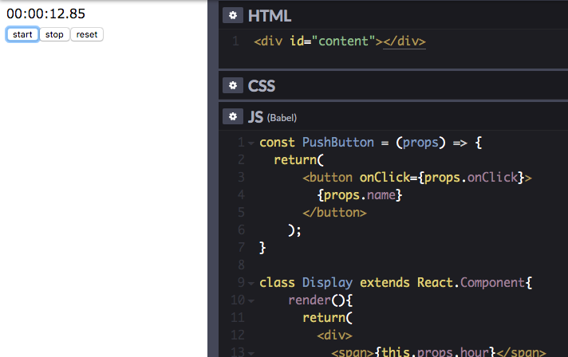

Atsushi Satoh's Portfolio
Profile
- 名前: Atsushi Satoh
- 出身: 愛知県知立市
- 出身校: 名古屋大学工学部
-
活動:
不動産営業=>組み込みソフトウェア開発会社でプログラマーとして勤務。
- 趣味: 楽器演奏(ピアノ、ギター、ドラム)
Skills
プログラミング言語
| スキル |
経験年数 |
レベル |
| C, C++ |
1年 |
ぱちんこ遊技機の液晶表示制御プログラムの作成・テスト |
| JavaScript |
1年 |
GASによる業務支援マクロの作成。ES6(ES2015)対応 |
| PowerShell |
6ヶ月 |
業務支援の為の簡単なスクリプトが作成可能 |
| Java |
1年 |
簡単なプログラミングが可能 |
フレームワーク
| スキル |
経験年数 |
レベル |
| React |
6ヶ月 |
CRUDアプリケーションの開発が可能 |
バージョン管理システム
| スキル |
経験年数 |
レベル |
| SVN |
1年 |
多人数の開発におけるバージョン管理 |
| Git |
6ヶ月 |
単独での開発におけるバージョン管理 |
Works
個人で作成したアプリケーションを載せております。
React・Reduxを用いたCRUDアプリケーション開発

GitHubはこちら
使用した技術: JavaScript, React, Redux
JavaScript, Reactを用いたストップウォッチアプリの作成

ソースコードは上記画像リンク先にございます。
使用した技術: JavaScript, React